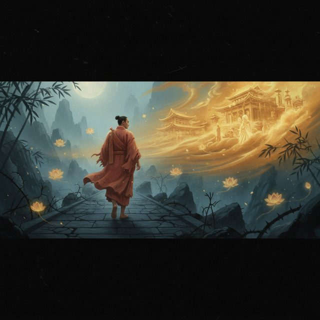
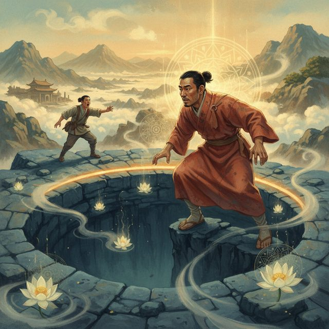
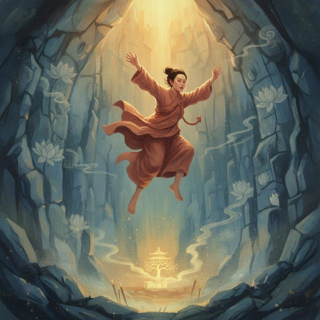
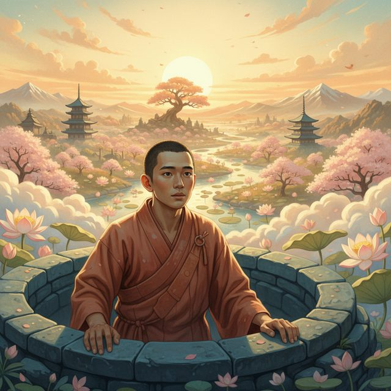

CH12-024 — images
【安心】今すぐ落ち着く短い教え｜一言で呼吸が戻る
ep
CH12
Script Viewer
snapshot
guide
台本
音声
サムネ
画像
CH12-024
画像
updated_at: 2026-01-13T11:01:50.708525Z
run_id:
CH12-024
CH12-024
後悔の念が脳裏をよぎる

CH12-024
過去の幻想に取り憑かれる
CH12-024
視聴者への呼びかけと救済の言葉
CH12-024
因果と過去の必要性
CH12-024
砂漠への案内
CH12-024
カコ、後ろ向きに歩く男
CH12-024
つまずき、文句を言うカコ
CH12-024
傷だらけだが前を見ない

CH12-024
穴の縁と旅人の警告

CH12-024
警告を無視し穴に落ちる
CH12-024
穴の底で泣き「もしも」を語る
CH12-024
光る蝶の登場と問いかけ
CH12-024
蝶の教え: 今を受け入れる
CH12-024
カコが現実を直視し認める
CH12-024
エネルギーが戻り「これから」を考える
CH12-024
壁の根を見つけ登り始める

CH12-024
穴から這い上がり前を見る
CH12-024
物語の結末と教訓
CH12-024
時間と後悔の正体へ掘り下げ
CH12-024
過去の意味は今が決める
CH12-024
「もしも」思考の幻想と別の道
CH12-024
選んだ道が正解、足跡が道になる
CH12-024
自分自身を労う
CH12-024
アドラー心理学: 目的論と鎖の鍵
CH12-024
過去のコートを脱ぎ捨て、新しく始める
CH12-024
今に集中し、未来を作る
CH12-024
結びの挨拶と祝福